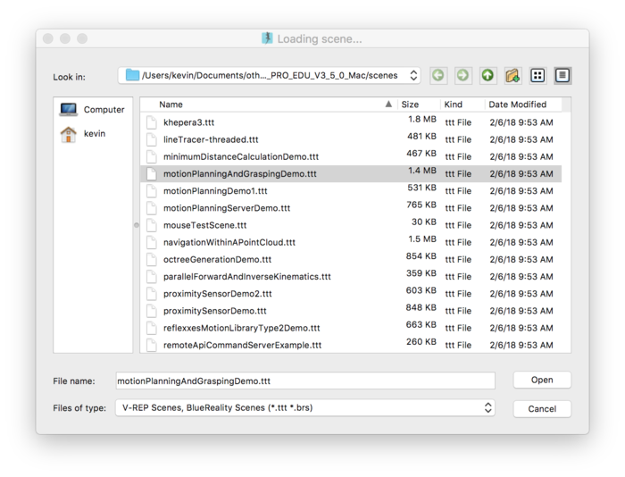
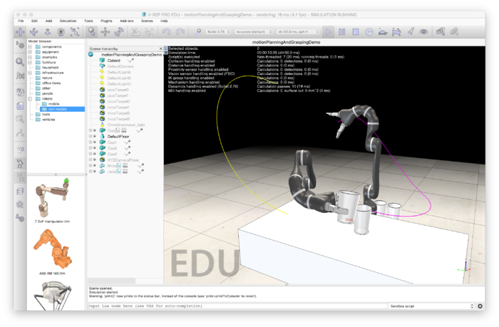
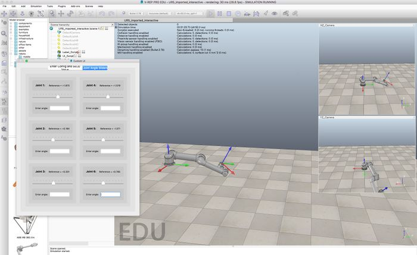
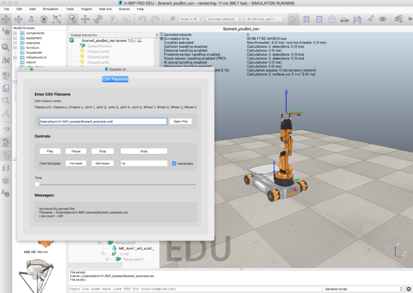

Now that you have the MR code library, you need the cross-platform V-REP robot simulator to allow you to visualize the motions of robots. You should complete the items on this page before moving on with the rest of the course! Click on any of the images to make them larger.
V-REP is computationally intensive. To minimize power usage, make sure to "pause" or "stop" a simulation when you are not using it.
1. Go to http://www.coppeliarobotics.com/ and download and install the free V-REP PRO EDU software for your operating system.
2. Launch V-REP and experiment with it. I suggest you choose File > Open scene... and open one of the example "scenes" that comes with V-REP. V-REP "scenes" are specifications of environments, robots, and their actions, and when you press the "play" button the simulation begins. Experimenting with these scenes will show you some of the capabilities of V-REP. For example, you could choose the "motionPlanningAndGrasping.ttt" scene, as shown in the image below. (All scene files end in .ttt.)

3. Press the "play" button at the top of the window to see the robots executing motion plans.

4. We will be using several custom scenes in this specialization. You should download the .zip folder from V-REP Introduction and unzip it. The scenes include: interactive UR5 (Scene 1), csv animation UR5 (Scene 2), interactive youBot (Scene 3), and csv animation youBot (Scene 4). The Universal Robots UR5 is a 6-joint robot arm and the KUKA youBot is a mobile manipulator consisting of a 5-joint robot arm mounted on an omnidirectional robot base with 4 mecanum wheels. "Interactive" means that you can move sliders that represent the joint positions of the robot, and you'll see the robot move in response. "csv animation" means that the scene expects you to provide a "comma-separated values" (csv) file. A row of the file is a set of joint values, separated by commas, corresponding to the configuration of the robot at a particular instant. Subsequent rows are the configuration of the robot at later times, and the csv file is played as an animation by V-REP.
Included in the .zip folder are the scene files themselves as well as example input files for some of the scenes. You should make sure your unzipped folder is in a convenient, memorable location on your computer, as you will have to type in the full path to the input files when you use them in the V-REP scenes that require them.
5. If you currently have a simulation running in V-REP, press the "stop" button to stop it. Then choose File > Open scene... and open the interactive UR5 scene (Scene1_UR5.ttt) you downloaded. Press the "play" button, choose the "Joint Angle Sliders" tab, and experiment with moving the sliders to see how the joints move.

6. Open and run (press "play") the youBot csv animation scene (Scene4_youBot_csv.ttt). Load the example .csv file for the youBot. You will have to provide the full path to the file; in the example on the Mac below, the path is "/Users/kevin/V-REP_scenes/Scene4_example.csv". After clicking "Open File," press the "Play" button just below where you entered the file path. You should see the mobile robot continually executing the trajectory encoded in the .csv file.

The first line of the .csv file is
0,-0.526,0,0,-0.785,0.785,-1.571,0,0,0,0,0
where the comma-separated values represent: phi angle of mobile robot base, x position of mobile robot base, y position of mobile robot base, joint1, joint2, joint3, joint4, joint5, wheel1, wheel2, wheel3, wheel4. The angles of the wheels are included so you can see the wheels rotating as the robot moves.
LC_NUMERIC=en_US.UTF-8 ./vrep.sh
7. During this specialization, you will have to generate videos of V-REP visualizations. We have found it easiest to use screenshot-video tools for your operating system. On the Mac, you can use Quicktime to record videos from the screen. On Linux, you can use SimpleScreenRecorder or recordMyDesktop, for example. On Windows, you can use Screen Recorder.
V-REP provides its own tool, which you can find at Tools>Video recorder. You may need to stop the current scene to be able to configure the video recorder. You can find more information on recording V-REP movies here: http://www.coppeliarobotics.com/helpFiles/en/aviRecorder.htm.
Try recording and saving a 10 second movie of the youBot animating the example .csv file. Your video should be of reasonable quality, but the compression should be such that the video doesn't use too much memory. For example, a few MB is a reasonably sized short video.
When you're finished with the tasks above...
Congratulations! Your MR code library and the V-REP simulator are ready to use. Do not move on to the rest of the course until these are working for you.
In this specialization we will mostly be using V-REP to visualize the motion of robot arms and wheeled mobile robots. For example, we use V-REP to animate your solutions to inverse kinematics, to display the dynamic motion of a robot arm according to dynamics calculations that you will write, to animate the results of path planners you develop, and to simulate a mobile manipulator manipulating an object.
The Modern Robotics specialization does not teach how to use V-REP in detail, and it uses only a small fraction of V-REP's capabilities. If you want to learn more, you can find links to documentation at the bottom of this page.